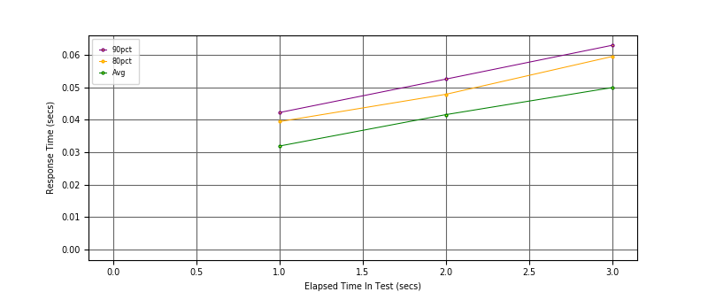
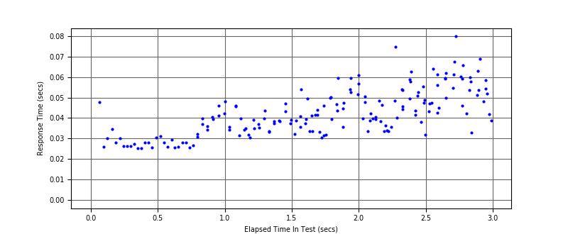
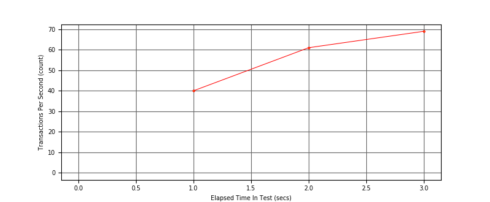

Performance Results Report
Summary
transactions: 174
errors: 0
run time: 3 secs
rampup: 3 secs
test start: 2018-07-23 12:56:20
test finish: 2018-07-23 12:56:23
time-series interval: 1 secs
workload configuration:
| group name | threads | script name |
|---|
| user_group-1 | 4 | v_perf.py |
All Transactions
Transaction Response Summary (secs)
| count | min | avg | 80pct | 90pct | 95pct | max | stdev |
|---|
| 174 | 0.025 | 0.043 | 0.054 | 0.059 | 0.062 | 0.080 | 0.011 |
Interval Details (secs)
| interval | count | rate | min | avg | 80pct | 90pct | 95pct | max | stdev |
|---|
| 1 | 40 | 40.00 | 0.025 | 0.032 | 0.039 | 0.042 | 0.048 | 0.048 | 0.007 |
| 2 | 61 | 61.00 | 0.030 | 0.042 | 0.048 | 0.053 | 0.057 | 0.061 | 0.008 |
| 3 | 69 | 69.00 | 0.032 | 0.050 | 0.060 | 0.063 | 0.067 | 0.080 | 0.011 |
Graphs
Response Time: 1 sec time-series

Response Time: raw data (all points)

Throughput: 5 sec time-series
